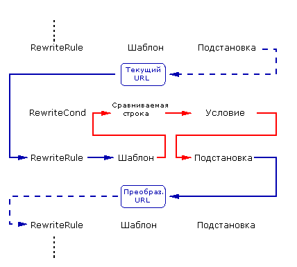
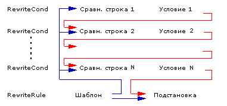

Модуль Apache mod_rewrite
Реализует механизм основанный на правилах для преобразования на лету для запрошенных URLs Расширение mod_rewrite. c rewrite_module Доступен в Apache 1. 3 и более поздних версиях
«Главное преимущество mod_rewrite — настраиваемость и гибкость Sendmail. Обратная сторона mod_rewrite — настраиваемость и гибкость Sendmail».
-- Brian Behlendorf
Apache Group
«Несмотря на тонны примеров и документацию, mod_rewrite это Вуду. Чертовски клёвый Вуду, но все-таки Вуду. "
-- Brian Moore
bem@news. cmc. net
Добро пожаловать в мир mod_rewrite, швейцарский нож URL преобразований!
Данный модуль представляет собой основанный на правилах механизм (синтаксический анализатор с применением регулярных выражений), выполняющий URL преобразования на лету. Модуль поддерживает неограниченное количество правил и связанных с каждым правилом условий, реализуя действительно гибкий и мощный механизм управления URL. URL преобразования могут использовать разные источники данных, например переменные сервера, переменные окружения, HTTP заголовки, время и даже запросы к внешним базам данных в разных форматах, — для получения URL нужного вам вида.
Этот модуль оперирует с полными URL (включая path-info) и в контексте сервера (httpd.conf) и в контексте каталога (.htaccess) и даже может генерировать части строки запроса в качестве результата. Преобразованный результат может приводить к внутренней обработке, внешнему перенаправлению запроса или даже к прохождению через внутренний прокси модуль.
Но, вся эта функциональность и гибкость имеет свой недостаток - сложность. Поэтому, не думайте что вы поймете работу модуля за один день.
Этот модуль был придуман и написан в апреле 1996 и эксклюзивно подарен The Apache Group в июле 1997
Ralf S. Engelschall
rse@engelschall.com
www.engelschall.com
Внутренние процессы в этом модуле очень сложны, однако, их нужно объяснить хотя бы раз, и даже обычному пользователю, во избежание распространённых ошибок и раскрытия всей его функциональности.
Для начала, нужно просто понять, что обработку какого-либо HTTP запроса, сервер Apache делает в фазах. Перехватчик этих фаз обеспечивается Apache API. Mod_rewrite использует 2 из этих перехватчиков: транслятор из URL в имя файла используемый после считывания HTTP запроса, но до начала какой-либо авторизации и перехватчик адресной привязки начинающий работать после фаз авторизации и считывания конфигурационных файлов каталога (.htaccess), но до активизации обработчика содержания.
Поэтому, после поступления запроса и определения Apache'ем соответствующего сервера (или виртуального сервера) механизм преобразований начинает обработку всех директив mod_rewrite из конфигурационного файла сервера в фазе трансляции из URL в имя файла. Несколько шагов спустя, когда находятся каталоги с конечными данными, конфигурационные директивы mod_rewrite запускаются в фазе адресной привязки. В обоих этих ситуациях mod_rewrite преобразует URL, либо в новые URL, либо в имена файлов, хотя между ними нет объективных различий. При создании API, не предполагалось его использование таким образом, однако что касается Apache 1.x это единственный возможный способ работы mod_rewrite. Чтобы внести больше ясности запомните 2 вещи:
И снова mod_rewrite упорно пытается сделать этот сложный шаг полностью прозрачным для пользователя, однако здесь вам следует запомнить: в то время как манипуляции с URL контексте сервера действительно быстры и эффективны, манипуляции в контексте каталога медленны и неэффективны из-за проблемы курицы и яйца. Однако, с другой стороны это единственный возможный путь работы mod_rewrite (локально ограниченный) для URL преобразований, доступный обычному пользователю.
Не забывайте 2 эти вещи!
Запускаясь в этих двух фазах API, mod_rewrite считывает конфигурационные наборы правил из своей конфигурационной структуры (создаваемой либо один раз при запуске сервера, - для контекста сервера, либо каждый раз при обходе ядром Apache каталогов, - для контекста каталога). Затем запускается механизм URL преобразований с уже имеющимся набором правил (правило(а) вместе со своими условиями). Функционирование самого механизма преобразований в точности одинаково для обоих контекстов конфигурации. Различаются только конечные результы обработки.
Порядок правил в наборе важен потому что механизм преобразований обрабатывает их в специальном (и не очень очевидном) порядке. RewriteRule директивы просматриваются механизмом преобразований строчка за строчкой и при нахождении соответствия конкретному правилу просматриваются относящиеся к этому правилу условия (RewriteCond директивы). По историческим причинам условия находятся перед правилами, отсюда длиннее последовательность выполнения команд. На рис. 1 это показано подробнее.

Рисунок 1:Последовательность выполнения комад при обработке набора правил
Как вы можете видеть, сначала URL сравнивается с Шаблон для каждого из правил. При неудаче mod_rewrite сразу же останавливает обработку этого правила и продолжает работу, используя следующее правило. Если Шаблон совпадает, mod_rewrite ищет соответствующие этому правилу условия. Если их нет, он просто заменяет URL новой величиной полученной из строки Подстановка и продолжает дальше обрабатывать правила. Однако если существуют условия, запускается внутренний цикл для их обработки в том порядке в котором они перечислены. Для условий эта логика другая: мы не сравниваем URL на соответствие какому-либо шаблону. Вместо этого мы сначала создаем строку СравниваемаяСтрока дополняя её переменными, обратными ссылками, запросами в базы данных, и т.д. и затем пытаемся проверять на соответствие с Условие. Если шаблон не соответствует, весь набор условий и соответствующих правил считается несоответствующим условию. Если есть соответствие шаблону, в этом случае производится обработка следующего условия до тех пор пока они будут не исчерпаны. Если все условия совпадают, процесс обработки продолжается с использованием для URL подстановки данных из поля Подстановка.
Экранирование специальных символов
Что касается Apache 1.3.20, специальные символы в СравниваемаяСтрока и Подстановка строках могут быть экранированы (имеется ввиду, отношение к ним как к нормальным символам без их обычного специального значения) путем предшествующего им символа слеша ('\'). Другими словами, вы можете включать символ доллара в строку Подстановка используя '\$'; это не позволит mod_rewrite относиться к нему как к обратной ссылке.
Наличие обратных связей в регулярных выражениях
Здесь нужно запомнить одну важную вещь: Всякий раз, когда вы используете круглые скобки в Шаблон или в одном из Условие, создаются внутренние обратные связи которые могут быть использованы со строками $N и %N (см. ниже). Они полезны при создании строк Подстановка и СравниваемаяСтрока. Рисунок 2 показывает в какие места при дополнении (строк Подстановка и СравниваемаяСтрока) перемещаются обратные связи.

Рисунок 2: Движение обратных связей в правиле.
Итак, - это был неподъёмный курс по внутренним механизмам mod_rewrite, но он вам сильно поможет при дальнейшем чтении документации по данному модулю.
Этот модуль отслеживает две дополнительные (нестандартные) переменные окружения CGI/SSI называемые SCRIPT_URL и SCRIPT_URI. Они содержат логическое представление текущего ресурса, т.е. то, каким вы видите это в адресной строке браузера, в то время как стандартные переменные CGI/SSI SCRIPT_NAME и SCRIPT_FILENAME содержат физическое или системное представление.
Замечание: эти переменные содержат URI/URL в том виде, в котором они были первоначально запрошены, т.е., перед тем как были сделаные какие-либо преобразования. Это важно, ибо процесс преобразования в первую очередь используется для преобразования логических URL в физические пути к конкретным файлам.
Пример
SCRIPT_NAME=/sw/lib/w3s/tree/global/u/rse/.www/index.html
SCRIPT_FILENAME=/u/rse/.www/index.html
SCRIPT_URL=/u/rse/
SCRIPT_URI=http://en1.engelschall.com/u/rse/
В Руководстве по преобразованиям URL представлена коллекция практических решений проблем URL преобразований. Там можно найти наборы правил взятые из реальной жизни и дополнительную информацию о mod_rewrite.
Описание:
Включает или выключает работу механизма преобразования
Синтаксис:
RewriteEngine on|off
Значение по умолчанию:
RewriteEngine off
Контекст:
server configvirtual host directory.htaccess
Разрешение:
FileInfo
Статус:
Расширение
Модуль:
mod_rewrite
Директива RewriteEngine включает или выключает работу механизма преобразований. Если она установлена в положение off этот модуль совсем не работает. Он даже не обновляет переменные окружения SCRIPT_URx.
Используйте эту директиву для выключения этого модуля вместо простого закомментирования директив RewriteRule!
Отметьте, что по-умолчанию, настройки преобразований не наследуются. Это означает что вы должны иметь RewriteEngine on директиву для каждого виртуального хоста в котором вы хотите использовать этот модуль.
Описание:
Устанавливает кое-какие специальные опции для механизма преобразований
Синтаксис:
RewriteOptions Options
Значение по умолчанию:
None
Контекст:
server configvirtual host directory.htaccess
Разрешение:
FileInfo
Статус:
Расширение
Модуль:
mod_rewrite
Директива RewriteOptions устанавливает некоторые специальные опции для текущей конфигурации в контексте сервера или каталога. Строки Option могут иметь следующий вид:
Описание:
Устанавливает имя файла используемое для ведения журнала механизма преобразования
Синтаксис:
RewriteLog file-path
Контекст:
server configvirtual host
Статус:
Расширение
Модуль:
mod_rewrite
Директива RewriteLog устанавливает имя файла а котором сервер ведет журнал любых происходящих действий по преобразованиям URL. Если это имя не начинается со слэша ('/') в этом случае путь считается от Server Root. В конфигурационном файле сервера эта директива должна встречаться только один раз.
Для отключения ведения журнала преобразований не рекомендуется устанавливать Filename в /dev/null, потому что хотя механизм преобразований и не производит вывод в файл журнала в этом случае, внутри он все еще ведет журнализацию. Это замедлит сервер без каких-либо преимуществ для администратора! Для отключения ведения журнала, либо удалите, либо закомментируйте директиву RewriteLog либо используйте RewriteLogLevel 0!
Безопасность
Смотрите Apache Security Tips документ в котором есть более подробная информация о том, почему вы можете быть уязвимы если разрешили запись в каталоги с файлами журналов кому угодно, кроме пользователя от имени которого запускается сервер.
Пример
RewriteLog "/usr/local/var/apache/logs/rewrite.log"
Описание:
Устанавливает уровень детализации при журнализации действий механизма преобразований
Синтаксис:
RewriteLogLevel Level
Значение по умолчанию:
RewriteLogLevel 0
Контекст:
server configvirtual host
Статус:
Расширение
Модуль:
mod_rewrite
Директива RewriteLogLevel устанавливает уровень детализации журнала механизма преобразований. По-умолчанию уровень 0 означающий что журнализация не ведется, в то время как 9 или более означает что записываются практически все действия.
Для отключения журнализации действий механизма преобразований просто установите уровень на 0. Это отключает ведение журнала для всех действий по преобразованиям.
Использование больших значений уровня очень сильно замедлит ваш сервер Apache! Используйте журнал преобразований на уровне большем чем 2 только для отладочных целей!
Пример
RewriteLogLevel 3
Описание:
Устанавливает имя файла используемого для RewriteMap синхронизации
Синтаксис:
RewriteLock file-path
Значение по умолчанию:
None
Контекст:
server config
Статус:
Расширение
Модуль:
mod_rewrite
Эта директива определяет имя файла синхронизации который нужен mod_rewrite для связи с RewriteMap программами. Сделайте этот файл локальным (размещенным не на NFS-смонтированном ресурсе) когда вы хотите использовать программу для создания ассоциативного массива преобразований. Это не является обязательным для других типов таких массивов.
Описание:
Определяет функцию создания ассоциативного массива для поиска по ключу
Синтаксис:
RewriteMap MapName MapType:MapSource
Значение по умолчанию:
нет
Контекст:
server configvirtual host
Статус:
Расширение
Модуль:
mod_rewrite
Совместимость:
Выбор разных типов dbm доступен в Apache 2.0.41 и более поздних версиях
Директива RewriteMap ассоциативный массив преобразований, который может быть использован в правилах преобразований и использующий соответствующие функции для вставки/извлечения элементов, для поиска по ключу соответствующих значений. Источник этого поиска может иметь различный тип.
MapName это имя массива которое будет использоваться для поиска соответствующего значения из массива в правиле преобразования через один из следующих конструкторов:
${ MapName : LookupKey }
${ MapName : LookupKey | DefaultValue }
Когда встречается подобная конструкция, происходит обращение к массиву MapName и поиск значения сопоставленного ключу LookupKey. Если найдено искомое значение ключа, происходит извлечение значения SubstValue с помощью соответствующей функции. Если ключ не найден тогда происходит подстановка DefaultValue или пустой строки если не указана DefaultValue.
Могут быть использованы следующие комбинации типа функции - MapType для вставки/извлечения элементов массива и MapSource - самого ассоциативного массива:
Это стандартная опция для создания ассоциативного массива где MapSource это простой текстовый ASCII файл содержащий либо пустый строчки, строчки комментариев (начинающиеся с символа '#') либо пары подобные следующим - одна в строчке:
MatchingKey SubstValue
Пример
##
## map.txt -- массив преобразований
##
Ralf.S.Engelschall rse # Bastard Operator From Hell
Mr.Joe.Average joe # Mr. Average
RewriteMap real-to-user txt:/path/to/file/map.txt
Этот вариант идентичен варианту с простым текстом приведённом выше но со специальной особенностью пост-обработки: После нахождения какую-либо величину производится её анализ на предмет нахождения символов "|" которые имеют значение логического "или". Другими словами они означают набор альтернативных вариантов и выбор возвращаемой величины из них производится произвольно. Хотя это кажется безумием и абсолютно бесполезным, это в действительности используется для балансировки нагрузки в ситуациях с обратным прокси где происходит поиск имен серверов. Например:
##
## map.txt -- массив преобразований
##
static www1|www2|www3|www4
dynamic www5|www6
RewriteMap servers rnd:/path/to/file/map.txt
Здесь, источник - это двоичный файл DBM формата содержащий то же самое содержимое что и простой текстовый файл, однако в специальном виде, оптимизированном для действительно быстрого поиска. Этот тип может быть sdbm, gdbm, ndbm, или db в зависимости от настроек при компиляции. Если тип опущен, выбирается тип установленный по-умолчанию при компиляции. Вы можете создавать такой файл любой утилитой DBM или следующим Perl скриптом. Убедитесь что он настроен для создания требуемого типа DBM файла. Этот пример создает файл NDBM.
#!/path/to/bin/perl
##
## txt2dbm -- convert txt map to dbm format
##
use NDBM_File;
use Fcntl;
($txtmap, $dbmmap) = @ARGV;
open(TXT, "<$txtmap") or die "Couldn't open $txtmap!\n";
tie (%DB, 'NDBM_File', $dbmmap,O_RDWR|O_TRUNC|O_CREAT, 0644)
or die "Couldn't create $dbmmap!\n";
while (<TXT>) {
next if (/^\s*#/ or /^\s*$/);
$DB{$1} = $2 if (/^\s*(\S+)\s+(\S+)/);
}
untie %DB;
close(TXT);
$ txt2dbm map.txt map.db
Здесь, источник - это какая-либо внутренняя функция Apache. В настоящее время вы не можете создавать свои собственные функции, однако уже существуют следующие функции:
Здесь, источник - это программа, а не файл с ассоциативным массивом. Для её создания вы можете использовать любой выбранный язык, однако результат должен быть исполняемым файлом (т.е., либо объектным кодом либо скриптом с магической первой строчкой '#!/path/to/interpreter').
Эта программа запускается один раз при запуске сервера Apache и затем взаимодействует с механизмом преобразований через файловые обработчики stdin(поток ввода) и stdout(поток вывода). Для каждого поиска в массиве, соответствующий ключ для поиска, будет получаться в виде строки, подаваемой на stdin и оканчивающейся символом перевода строки. Затем эта программа должна вернуть значение найденной величины в stdout в виде строки оканчивающейся символом перевода строки либо строкой из четырёх символов "NULL" если поиск неудачен (т.е., для соответствующего значения ключа не найдено никакого значения). Тривиальная программа реализующая массив 1:1 (т.е., ключ == значение) может выглядеть так:
#!/usr/bin/perl
$| = 1;
while (<STDIN>) {
# ...put here any transformations or lookups...
print $_;
}
Однако будьте очень осторожны:
Директива RewriteMap может встречаться более одного раза. Для каждого массива используйте одну RewriteMap директиву для объявления файла с массивом преобразований. В то время как вы не можете определять массив в контексте каталога, его использование в этом контексте конечно же возможно.
Замечание
Для простого текстового и DBM файлов ключи поиска кэшируются ядром до тех пор пока не изменится тип mtime файла с массивом или пока не произойдет рестарт сервера. Таким образом, вы можете использовать ассоциативные массивы в правилах которые используются для каждого запроса. Это не проблема, потому что внешний поиск происходит только один раз!
Описание:
Устанавливает базовый URL для преобразований в контексте каталога
Синтаксис:
RewriteBase URL-path
Значение по умолчанию:
Смотри использование для более подробной информации.
Контекст:
directory.htaccess
Разрешение:
FileInfo
Статус:
Расширение
Модуль:
mod_rewrite
Директива RewriteBase устанавливает конкретный, базовый URL для преобразований в контексте каталога. Как вы увидите ниже, RewriteRule может быть использовано в конфигурационных файлах каталогов (.htaccess). Это будет работать локально, т.е., префикс локального каталога отбрасывается на этом этапе обработки и ваши правила преобразований работают только в оставшейся части. В конце он автоматически добавляется обратно к пути. Настройка по-умолчанию; RewriteBase physical-directory-path
Когда, для какого-нибудь нового URL происходит подстановка(преобразование), этот модуль должен заново вовлечь этот URL в обработку. Для того чтобы иметь возможность сделать это, нужно знать какие у него префикс или база URL. По-умолчанию этот префикс равен самому пути. Однако на большинстве сайтов URL'ы НЕ прямо соответствуют физическим путям, поэтому это допущение обычно окажется неверным! В этом случае вы должны использовать директиву RewriteBase для указания правильного префикса URL.
Если URL вашего сервера не соответствуют физическим путям к файлам, вы должны использовать RewriteBase в каждом из .htaccess файлов где вы хотите использовать директивы RewriteRule.
Например, предположим следующий конфигурационный файл каталога:
#
# /abc/def/.htaccess -- конфигурационный файл каталога /abc/def
# Помните: /abc/def это физический путь /xyz, т.е., у сервера есть
# директива 'Alias /xyz /abc/def' к примеру
#
RewriteEngine On
# даем серверу знать что мы работаем через /xyz а не
# через префикс физического пути /abc/def
RewriteBase /xyz
# теперь правила преобразований
RewriteRule ^oldstuff\.html$ newstuff.html
В примере выше, запрос к /xyz/oldstuff.html корректно преобразуется в физический файл /abc/def/newstuff.html.
Для любителей поковыряться в Apache
Следующий список дает подробную информацию об этапах внутренней работы:
Запрос:
/xyz/oldstuff.html
Внутренняя работа:
/xyz/oldstuff.html -> /abc/def/oldstuff.html (per-server Alias)
/abc/def/oldstuff.html -> /abc/def/newstuff.html (per-dir RewriteRule)
/abc/def/newstuff.html -> /xyz/newstuff.html (per-dir RewriteBase)
/xyz/newstuff.html -> /abc/def/newstuff.html (per-server Alias)
Результат:
/abc/def/newstuff.html
Это кажется очень сложным однако это корректная внутренняя работа Apache, из-за того что преобразования в контексте каталога происходят слишком поздно в этом процессе. Поэтому, когда это происходит (преобразование), запрос должен быть возвращен обратно ядру Apache! НО: В то время как это кажется серъёзным накладным расходом, в действительности это не так, потому что этот возврат происходит целиком внутри сервера Apache и та же самая процедура используется многими другими операциями внутри Apache. Поэтому, вы можете быть уверены что дизайн и реализация правильные.
Описание:
Определяет условие при котором происходит преобразование
Синтаксис:
RewriteCond СравниваемаяСтрока Условие
Значение по умолчанию:
None
Контекст:
server configvirtual host directory.htaccess
Разрешение:
FileInfo
Статус:
Расширение
Модуль:
mod_rewrite
Директива RewriteCond определяет условия для какого-либо правила. Перед директивой RewriteRule располагаются одна или несколько директив RewriteCond. Следующее за ними правило преобразования используется только тогда, когда URI соответствует условиям этой директивы и также условиям этих дополительных директив.
СравниваемаяСтрока строка которая может содержать следующие дополнительные конструкции в дополении к простому тексту:
$N
(0 <= N <= 9) предоставляющие доступ к сгруппированным частям (в круглых скобках!) шаблона из соответствующей директивы RewriteRule (единственной, следующей сразу за текущим набором директив RewriteCond).
%N
(1 <= N <= 9) предоставляющие доступ к сгруппированным частям (в круглых скобках!) шаблона из соответствующей директивы RewriteCond в текущем наборе условий.
${mapname:key|default}
Смотрите документацию по RewriteMap для получения более подробной информации.
%{ NAME_OF_VARIABLE }
где NAME_OF_VARIABLE может быть строкой взятой из следующего списка:
|
HTTP заголовки: |
соединение & запрос: |
|
|
HTTP_USER_AGENT |
REMOTE_ADDR |
|
|
внутренние сервера: |
системные: |
специальные: |
|
DOCUMENT_ROOT |
TIME_YEAR |
API_VERSION |
Эти переменные полностью соответствуют названным похожим образом MIME-заголовкам HTTP , Си переменным сервера Apache или полям struct tm систем Unix. Большинство из них документрованны в других местах руководства или в спецификации CGI. Те, что являются для mod_rewrite специальными включают:
IS_SUBREQ
Будет содержать текст "true" если запрос выполняется в текущий момент как подзапрос, "false" в другом случае. Подзапросы могут быть сгенерированны модулями которым нужно иметь дело с дополнительными файлами или URI для того чтобы выполнить собственные задачи.
API_VERSION
Это версия API модуля Apache (внутренний интерфейс между сервером и модулем) в текущей сборке сервера, что определено в include/ap_mmn.h. API версия модуля соответствует используемой версии Apache (для версии Apache 1.3.14, к примеру это 19990320:10), однако это в основном интересно авторам модулей.
THE_REQUEST
Полная строка HTTP запроса отправленная браузером серверу (т.е., "GET /index.html HTTP/1.1"). Она не включает какие-либо дополнительные заголовки отправляемые браузером.
REQUEST_URI
Ресурс, запрошенный в строке HTTP запроса. (В примере выше, это было бы "/index.html".)
REQUEST_FILENAME
Полный путь в файловой системе сервера к файлу или скрипту соответствующим этому запросу.
Специальные примечания:
Условие это шаблон условия, т.е., какое-либо регулярное выражение применяемое к текущему экземпляру СравниваемаяСтрока, т.е., СравниваемаяСтрока просматривается на поиск соответствия Условие.
Помните: Условие это perl совместимое регулярное выражение с некоторыми дополнениями:
Замечание
Все эти проверки также могут быть предварены префиксом восклицательный знак ('!') для инвертирования их значения.
Дополнительно вы можете устанавливать специальные флаги для Условие добавляя
[flags]
третьим аргументом в директиву RewriteCond. Flags список следующих флагов разделенных запятыми:
RewriteCond %{REMOTE_HOST} ^host1.* [OR]
RewriteCond %{REMOTE_HOST} ^host2.* [OR]
RewriteCond %{REMOTE_HOST} ^host3.*
RewriteRule ...some special stuff for any of these hosts...
Без этого флага вы должны были бы написать это условие/правило три раза.
Пример:
Для выдачи главной страницы какого-либо сайта согласно "User-Agent:" заголовку запроса, вы можете использовать следующие директивы:
RewriteCond %{HTTP_USER_AGENT} ^Mozilla.*
RewriteRule ^/$ /homepage.max.html [L]
RewriteCond %{HTTP_USER_AGENT} ^Lynx.*
RewriteRule ^/$ /homepage.min.html [L]
RewriteRule ^/$ /homepage.std.html [L]
Интерпретация: Если у вас Netscape Navigator (который идентифицируется как 'Mozilla'), вы выдаете максимально навороченную страницу, с фреймами, и т.д. Если у вас Lynx (текстовый браузер), вы выдаете наименее навороченную страницу, без рисунков, таблиц и т.д. Если любой другой браузер, выдаете стандартную страницу.
Описание:
Определяет правила для механизма преобразований
Синтаксис:
RewriteRule Шаблон Подстановка
Значение по умолчанию:
None
Контекст:
server configvirtual host directory.htaccess
Разрешение:
FileInfo
Статус:
Расширение
Модуль:
mod_rewrite
Совместимость:
Флаг cookie доступен в Apache 2.0.40 и более поздних.
Директива RewriteRule и есть настоящая рабочая лошадка преобразований. Эта директива может встречаться более одного раза. Каждая директива, в этом случае, определяет одно правило преобразования. Порядок определений этих правил важен, потому что этот порядок используется при обработке правил во время работы.
Шаблон это perl совместимое регулярное выражение которое применяется к текущему URL. Здесь под "текущим" подразумевается значение URL когда применяется это правило. Этот URL не обязательно совпадает с первоначально запрошенным URL, потому что любое количество правил возможно уже были применены к нему и соответственно преобразовали его.
Некоторые указания по синтаксису регулярных выражений:
Текст:
. Любой одиночный символ
[chars] Класс симвлолв: Один из символов
[^chars] Класс симвлолв: Ни один из символов
text1|text2 Альтернатива: text1 или text2
Кванторы (символы для обозначения количественных отношений):
? 0 или 1 из предшествующего текста
* 0 или N из предшествующего текста (N > 0)
+ 1 или N из предшествующего текста (N > 1)
Группировка:
(text) Группировка текста
(либо установка границ альтернативы или
для создания обратных связей где N группа, которая
может быть использована в RHS директивы RewriteRule с $N)
Маркеры:
^ Маркер начала строки
$ Маркер конца строки
Экранирование:
\char экранирование конкретного символа
(к примеру для указания символов ".[]()" и т.д.)
Более подробную информацию о регулярных выражениях, смотрите в документации по регулярным выражениям Perl ("perldoc perlre"). Если вы заинтересованы в ещё более детальной информации о регулярных выражениях и их диалектах (POSIX и т.д.), смотрите следующую, специально написанную по этой теме книгу:
Mastering Regular Expressions
Jeffrey E.F. Friedl
Nutshell Handbook Series
O'Reilly & Associates, Inc. 1997
ISBN 1-56592-257-3
Кроме того, в mod_rewrite символ отрицания (NOT) ('!') - допускаемый префикс в шаблоне. Это даёт вам возможность инвертировать действие шаблона; ну к примеру скажем: "если текущий URL не совпадает с этим шаблоном". Это может быть использовано в особых случаях, когда проще найти шаблон для несоответствия, или в качестве последнего правила, работающего по умолчанию.
Примечание
При использовании символа NOT (не) для инвертирования действия шаблона вы не можете иметь сгруппированные части групповых символов в шаблоне. Это невозможно потому что когда нет соответствия шаблону, для групп нет никакого содержимого. В результате, если используются шаблоны с отрицанием, вы не можете использовать $N в строках подстановок!
Подстановка в правиле преобразования это строка будет подставляться (или будет заменять) вместо оригинального URL, для которого естьсовпадение Шаблону. Кроме простого текста вы можете использовать
Обратные связи это $N (N=0..9) идентификаторы которые заменяются содержимым N-й группы подходящего Шаблона. Переменные сервера Это тоже самое что и СравниваемаяСтрока директивы RewriteCond. Запросы к массиву пришли из директивы RewriteMap там они и объяснены. Эти три типа переменных рассматриваются в порядке, в котором они идут в вышеприведенном списке.
Как уже было упомянуто выше, все правила преобразований применяются с использованием Подстановки (в порядке, в котором они определены в конфигурационном файле). URL полностью заменяется Подстановкой и процесс преобразования идет до тех пор, пока не останется больше никаких правил, если только он не прерван специально, с помощью флага L - см. ниже.
Существует специальная строка подстановки вида '-' которая означает: НЕТ подстановки! Звучит глупо? Нет, это полезно для правил преобразования которые только проверяют некоторые URL однако не производят подстановок, т.е., в связке с флагом C (цепочка) возможно иметь более чем один шаблон, применяемый перед проведением непосредственно самой подстановки.
Ещё одно замечание: Вы даже можете создавать URL, содержащие строку запроса, в строке подстановки. Просто используйте вопросительный знак внутри строки подстановки для указания того, следующее за ним содержимое должно быть преобразовано в QUERY_STRING (строку запроса). Когда вы хотите убрать существующую строку запроса, завершайте строку подстановки просто вопросительным знаком.
Примечание
Есть одна особенность: Когда вы предваряете поле подстановки строкой http://thishost[:thisport], - mod_rewrite отрезает её автоматически. Это автоматическое усечение подразумеваемое при внешнем редиректе URL полезная и важная особенность при использовании в связке с запросами к массивам преобразований генерирующих имя хоста. Взгляните на первый пример, в разделе примеров ниже, чтобы понять это.
Помните
Безусловный внешний редирект на ваш собственный сервер не будет работать с префиксом http://thishost из-за этой особенности. Чтобы использовать такой саморедирект, Вы должны использовать флаг R(см. ниже).
В подстановке вы можете использовать, в том числе, и специальные флаги путем добавления следующей конструкции:
[флаги]
в качестве третьего аргумента директивы RewriteRule. Флаги - это разделённый запятыми, следующий список флагов:
Примечание: При использовании этого флага, убедитесь, что поле подстановки, это работающий URL! Если это не так, вы перенаправляете в никуда! И помните, что сам по себе этот флаг, только дополняет URL строкой http://thishost[:thisport]/, и процесс преобразования продолжается. Также, обычно вы хотите остановиться и сделать этот редирект немедленно. Для остановки процесса преобразования, вам также нужно написать флаг 'L'.
Примечание: Для того чтобы это использовать убедитесь что у вас есть работающий прокси модуль на вашем сервере Apache. Если вы не знаете этого проверьте есть ли в выводе "httpd -l" строчка mod_proxy.c. Если да, эти возможности доступны mod_rewrite. Если нет, то сначала вы должны пересобрать программу "httpd" с включенным прокси модулем.
Используйте следующее правило по своему усмотрению: всякий раз когда вы предваряете некоторые URL префиксом передавая их на обработку CGI-скрипту, - велик шанс что вы напоретесь на проблемы (или даже на ненужные издержки) в случае применения подзапросов. В этих случаях, используйте этот флаг.
RewriteRule /foo/(.*) /bar?arg=P1\%3d$1 [R,NE]
для которого '/foo/zed' преобразовывалось бы в безопасный запрос '/bar?arg=P1=zed'.
RewriteRule ^/abc(.*) /def$1 [PT]
Alias /def /ghi
Если вы опустите флаг PT, mod_rewrite прекрасно сделаетс свою работу, т.е., он преобразует uri=/abc/... в filename=/def/... как должен делать полностью API-совместимый транслятор URI-имя файла. Затем настаёт очередь mod_alias пытающегося сделать переход URI-имя файла который и не будет работать.
Примечание: Вы должны использовать этот флаг если вы хотите смешивать директивы разных модулей содержащих трансляторы URL-имя файла. Типичный пример это использование модулей mod_alias и mod_rewrite..
Для любителей поковыряться в Apache
Если бы текущий Apache API имел какой-нибудь перехватчик имя файла-имя файла в дополнение к перехватчику URI-имя файла нам бы не понадобился данный флаг! Однако без такого перехватчика этот флаг это единственное решение. The Apache Group обсудила эту проблему и добавит такой перехватчик во 2-й версии Apache.
Примечание
Никогда не забываёте что Шаблон применяется ко всему URL в конфигурационных файла сервера. Однако в конфигурационных файлах каталогов, префикс каталога (который всегда одинаков для конкретного каталога !), автоматически удаляется при соответствии шаблону и автоматически добавляется после завершения подстановки. Эта особенность, основа для многих видов преобразований, потому что без удаления префикса для родительского каталога тоже должно быть соответствие, что не всегда возможно.
Есть одно исключение: Если строка подстановки начинается с "http://" в этом случае префикс каталога не добавляется и происходит либо внешний редирект либо пропускание через прокси (если используется флаг P!)!
Примечание
Для того чтобы включить механизм преобразований в конфигурационных файлах каталогов вам нужно написать "RewriteEngine On" в этих самых файлах и, кроме того, должна быть разрешена конфигурационная директива "Options FollowSymLinks". Если ваш администратор запретил перегрузку конфигурационной директивы FollowSymLinks в пользовательских каталогах, в этом случае вы не сможете использовать механизм преобразований. Это ограничение нужно по соображениям безопасности.
Вот все возможные комбинации подстановок с расшифровкой их значений:
В конфигурационных файлах контекста сервера (httpd.conf)
для запроса вида "GET /somepath/pathinfo":
Правило Подстановка
---------------------------------------------- ----------------------------------
^/somepath(.*) otherpath$1 не поддерживается, т.к. неверно!
^/somepath(.*) otherpath$1 [R] не поддерживается, т.к. неверно!
^/somepath(.*) otherpath$1 [P] не поддерживается, т.к. неверно!
---------------------------------------------- ----------------------------------
^/somepath(.*) /otherpath$1 /otherpath/pathinfo
^/somepath(.*) /otherpath$1 [R] http://thishost/otherpath/pathinfo
через внешний редирект
^/somepath(.*) /otherpath$1 [P] не поддерживается, - глупо!
---------------------------------------------- ----------------------------------
^/somepath(.*) http://thishost/otherpath$1 /otherpath/pathinfo
^/somepath(.*) http://thishost/otherpath$1 [R] http://thishost/otherpath/pathinfo
через внешний редирект
^/somepath(.*) http://thishost/otherpath$1 [P] не поддерживается, - глупо!
---------------------------------------------- ----------------------------------
^/somepath(.*) http://otherhost/otherpath$1 http://otherhost/otherpath/pathinfo
через внешний редирект
^/somepath(.*) http://otherhost/otherpath$1 [R] http://otherhost/otherpath/pathinfo
через внешний редирект
(флаг [R] избыточен)
^/somepath(.*) http://otherhost/otherpath$1 [P] http://otherhost/otherpath/pathinfo
через внутренний прокси
Внутри конфигурационного файла каталога, для /somepath
(т.е., файл .htaccess в каталоге /physical/path/to/somepath содержит RewriteBase /somepath)
для запроса "GET /somepath/localpath/pathinfo":
Правило Подстановка
---------------------------------------------- ----------------------------------
^localpath(.*) otherpath$1 /somepath/otherpath/pathinfo
^localpath(.*) otherpath$1 [R] http://thishost/somepath/otherpath/pathinfo
через внешний редирект
^localpath(.*) otherpath$1 [P] не поддерживается, - глупо!
---------------------------------------------- ----------------------------------
^localpath(.*) /otherpath$1 /otherpath/pathinfo
^localpath(.*) /otherpath$1 [R] http://thishost/otherpath/pathinfo
через внешний редирект
^localpath(.*) /otherpath$1 [P] не поддерживается, - глупо!
---------------------------------------------- ----------------------------------
^localpath(.*) http://thishost/otherpath$1 /otherpath/pathinfo
^localpath(.*) http://thishost/otherpath$1 [R] http://thishost/otherpath/pathinfo
через внешний редирект
^localpath(.*) http://thishost/otherpath$1 [P] не поддерживается, - глупо!
---------------------------------------------- ----------------------------------
^localpath(.*) http://otherhost/otherpath$1 http://otherhost/otherpath/pathinfo
через внешний редирект
^localpath(.*) http://otherhost/otherpath$1 [R] http://otherhost/otherpath/pathinfo
через внешний редирект
(флаг [R] избыточен)
^localpath(.*) http://otherhost/otherpath$1 [P] http://otherhost/otherpath/pathinfo
через внутренний прокси
Пример:
Мы хотим преобразовать URL вида
/ Language /~ Realname /.../ File
в
/u/ Username /.../ File . Language
Мы берем файл, содержащий ассоциативный массив для преобразований, приведённый выше и сохраняем его под именем /path/to/file/map.txt. Затем, нам нужно только добавить следующие строчки в конфигурационный файл сервера Apache:
RewriteLog /path/to/file/rewrite.log
RewriteMap real-to-user txt:/path/to/file/map.txt
RewriteRule ^/([^/]+)/~([^/]+)/(.*)$ /u/${real-to-user:$2|nobody}/$3.$1